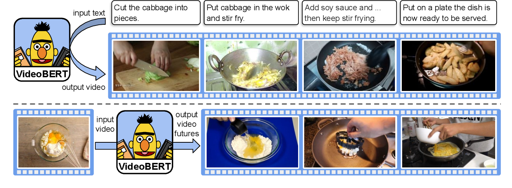
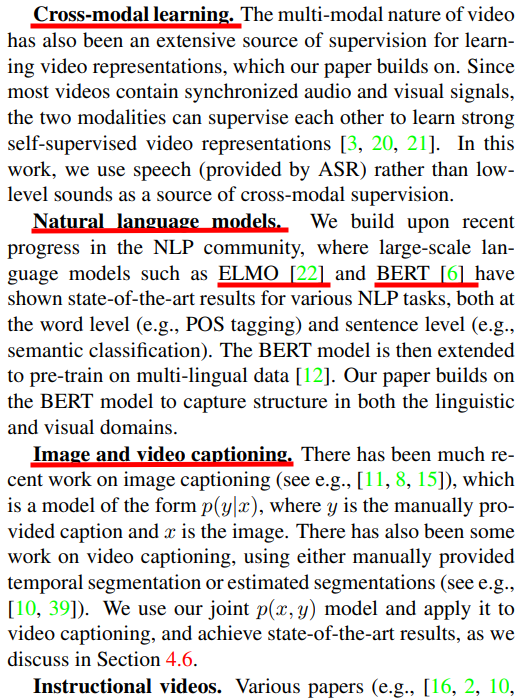

Presenting in a Reading Group
Tips for giving a reading group talk
 Credit: Arvinder Singh (IG: @sardarchitect)
Credit: Arvinder Singh (IG: @sardarchitect)
If you’re involved in research, you’re probably going to give a reading group presentation at some point. Many professors push their PhD students to give talks. Giving these talks helps researchers build the ability to read and understand papers quickly, and the ability to communicate findings effectively.
Volunteer or be volunTOLD.
— Prof. David Fouhey
Dr. Fouhey told this joke multiple times during the computer vision reading group last semester and the other professors agreed. It succinctly summarizes the emphasis placed on giving these talks.
What’s a reading group?
Reading groups regularly meet to discuss topics in research. Most of the time, the group will focus on one specific paper detailing an important finding. In AI, many of these reading groups may be focused on award-winning papers from recent conferences or on methods relevant to the participants’ research.
Reading groups exist mainly to enrich the participants’ knowledge. Sometimes the talks will focus on a broader topic as an introduction and sometimes the talks will focus on a specific method in a specific paper. The more niche the audience of the reading group, the more advanced the topic tends to be. At MSAIL, we try to strike a balance between our younger, less-experienced audience (i.e. underclassmen) and our older, experienced audience (upperclassmen, graduate students, etc.).
Choosing a topic
Choosing a topic may be the hardest part of the presentation process. Generally, you can present any topic you want, given that it hasn’t already been presented recently. Present on something that grabs your interest immediately, or something you have some familiarity with - it’ll make the preparation process more bearable. If you’re open to topics and are confident you can adapt, then just go to a conference or journal page and search through some of the accepted papers that catch your eye (at the time of writing, I’ve been looking at ICLR 2021 papers).
In my opinion, the main question you should ask yourself when you’ve identified a potential topic is:
Am I willing to read about this topic in depth, even to the extent of falling into a rabbit hole?
You obviously don’t need to know everything about the topic you choose (no one does), but persistence is the key to having a strong presentation. The more comfy you are with the overall subject area, the more natural your presentation will flow and the less likely you are to trip up. (For MSAIL, however, if you’re a newcomer and haven’t really done a reading group presentation before, we’ll help you out!)
Here are some questions you should ask yourself when looking at a paper or topic that you’re about to choose:
- Why is the topic important? What do I hope to get out of it?
- If it’s not clearly important or you don’t gain anything from knowledge of the topic itself, you’ll just be wasting time.
- Is this interesting to the naked eye?
- Important for getting people to attend your talk, and also helpful in gauging whether your audience will stay engaged. If they aren’t engaged in the beginning how can they be expected to in the end?
- Can I learn about this topic within a reasonable amount of time?
- A “reasonable amount of time” is generally a week or so.
- You need to choose papers of reasonable length. We often suggest presenting on conference papers because they’re less than 10 pages on average. Longer papers and topics are more feasible down the line when you’ve become comfortable with these types of presentations.
For the examples in this post, I will go through the process of choosing a topic for one of my previous talks. I’ve given plenty of talks on uninteresting topics and papers, but some were received particularly well. I will talk about my process for presenting VideoBERT, which I presented way back in Fall 2019. This was actually my first ever MSAIL talk, and at the time I had only recently become acquainted with AI research. The talk had plenty of faults, which I’ll try to use as examples.

Reading relevant sources
For a specific paper
Even if you choose one paper, that paper is probably not the only source you’re looking at to understand all the content. When you first read through the paper itself, you should annotate the key points (this is just a common reading skill, but it’s easy to forget!) and note the portions that confuse you. Depending on your background, you may or may not be able to finish the first pass. You should aim to have a big picture understanding of the paper, so maybe about 30%. If you can’t reach that level on your first read - don’t fret. You need to go read some supplementary materials. In particular, any decent paper will reference prior/related work in a section near the introduction - this is where you can dive into their citations and read up on the things that confuse you. Alternatively, I’ve found that Medium posts are particularly helpful as well for understanding more basic content.

Note the underlined portions here from the Related Work section of the VideoBERT paper. These highlight topics that might be worth searching up. You don’t need to dive into everything, but having a general understanding of what cross-modal learning and BERT are would help to better understand this paper.
If after all that, you still can’t understand 30% of the material in the paper, then I’m afraid you probably need to read further on basic material and possibly postpone your talk. I don’t expect this to happen because the pool of people who choose to present is self-selecting (as in, you’re more likely to want to present in a reading group if you already have basic background), but just in case, don’t be afraid to start at the beginning. I too have had to withdraw after signing up for a reading group before because I just did not understand what I was reading at all.
After the first pass, you have an idea of what the paper’s central ideas are. You can then start outlining what you want to talk about. Any subsequent passes will simply be to reinforce your understanding of the paper.
For a broader topic
For a broader topic, you should still choose to focus on a few papers in order to narrow the scope of your presentation. If you choose this, you likely have an idea in mind for how you wish to synthesize the ideas in the papers. Knowing this, you should focus your reading based on which points you hope to elucidate most. The process will very much feel like the process in the above section, except you’ll spend less time focusing on the intricate details of any one paper and you’ll focus more on the key ideas that you can use to build toward whatever main idea you’re focusing on.
In general, giving these types of talks is difficult. Even professors struggle to present so much content in a clear way. If you intend to give a talk like this, make sure to spend extra time in advance to really nail a cohesive argument. Otherwise, just stick to one paper since usually the time you have is only enough for one.
An example of a decent talk that synthesizes ideas in multiple papers is Justin Johnson’s lecture on Object Segmentation. This is obviously not a reading group talk and is an entire course lecture - but the principles are relatively similar since the topics presented here are from recent papers. Another good example is the talk Dr. Chai gave us in Fall 2020.
Some of our own, more tame talks presenting multiple papers include John Day’s Brain-Inspired AI talk, Yash Gambhir’s Text Summarization talk, and my talk on using reinforcement learning for optimization in COVID-19 problems. If you watch them you’ll notice some of the difficulties we had with balancing our content and finishing in time.
Creating slides
Most of the time you’ll be preparing slides to assist you in your talk. Organizing your slides properly is the key to getting a good presentation going.
Something that helps me is using a general slide outline and then identifying where in the paper I can get the information for a specific section. Then I fill in the sections and occasionally add subsections based on the subtitles in the paper.
In general, you want to introduce the following points in any regular paper presentation. You can change the order to suit your preferred flow, but the one presented here works well normally. Note that you can use any number of slides for each section:
- Motivation
- Why did the authors explore this topic? Who and how does it help solve a big problem?
- Major Contributions
- What are the authors proposing or introducing?
- Make this clear at the beginning. Then your audience will know what to expect.
- Background
- What does your audience need to know (at a high level) before you dive into the details of the topic?
- This is not always necessary, but if you’re presenting something technically challenging you may want to briefly introduce this.
- Method/Theory
- This is the novel part of the paper. What did the authors do and how did they do it?
- Results/Experiments
- How did they validate their methods and what did they compare it to? What are the deliverables?
- Discussion/Takeaways/Future Work
- Restate the major contributions. Also, talk about the implications for the future.
General Principles
You’ve probably presented to someone before. In that case, you should be well aware of standard principles, but I’ll write some in case you aren’t:
- Low amount of text on any one slide
- This is a technical talk. Please don’t make your readers lose you.
- Personally, I tend to put around 2 lines of text on a slide and then explain the rest verbally. Putting less text and explaining it instead helps me better understand the content too!
- Tables, images, diagrams, and videos wherever possible
- I don’t need to tell you that a picture is worth a thousand words, but they’ll help a ton. You can usually just steal these from the paper and its supplementary materials. If they don’t have any and you feel that one would be appropriate, don’t be afraid to create one!
- Avoid equations when you can
- Sometimes the talk is devoted to an equation or the theory you’re discussing is heavily reliant on equations (I can’t imagine some reinforcement learning papers without Bellman’s equation.). But if the paper has a lot of equations, try only to include the most important ones.
Take a look at my VideoBERT slides and note that I absolutely did not follow these principles and the above listed structure during that talk. I consider my VideoBERT talk to be of poor quality. Don’t worry about the technical content. (Note that this link is Michigan only)
Here are a few sample slides depicting how I would’ve roughly modified my VideoBERT talk to be easier to follow and listen to. I only wrote up to the methods section, because I just wanted to depict some of the principles in action. Again, don’t worry about the technical content. (This link is open to everyone)
Also, feel free to take a look at this slidedeck for general tips.
Presenting your slides
Presentation is very important for a technical talk. I’m pretty sure most presenters don’t want to bore their audience. During one reading group a while ago, I delivered a one hour talk that included even professors in the audience. After that talk I didn’t receive a single question. I can only speculate whether they got lost, whether we were out of time, or whether I just completely bored them. Let’s hope that doesn’t happen to you.
Here are some steps you can take to reduce the chance of losing your audience:
- Reiterating the importance of preparing your slides properly. Prepare them as if you were presenting them, and then practice presenting them at least once before your talk.
- This is a given - you should be speaking and never reading.
- Don’t go on diversions. Save them till the end.
- Leave room for questions during your presentation. I doubt most people will remember their questions by the end. A good rule might be to ask for questions every 5 minutes.
- Similarly, you should be gauging understanding as you go along. If the audience can attest to understand what you’re saying, you’re fine.
- Speak slowly. I don’t know about you, but I’d rather have my entire audience understand 80% of my presentation and not finish within time than finishing and not having anyone understand anything. I sometimes break this rule without realizing.
There are probably many more principles to follow, but in reading groups these are the ones I’ve found to be the most blatant errors that I wish I corrected.
Can I forgo preparing slides?
If you don’t want to prepare slides, you can either:
- Walk through the paper itself
- Prepare questions and facilitate a discussion rather than giving a talk
I wouldn’t advise a newcomer (or anyone, for that matter) to choose the first option. The point of preparing slides is to make material more presentable and to help you, the presenter, understand the paper better. I’ve only experienced people presenting straight from the paper when they knew what they were talking about but had last minute obligations come up. For reference, the last two times I saw this done were from a student who wrote the paper he was presenting on, and from a senior research scientist at Google Brain. It is generally okay, however, to supplement your slides during your talk by briefly visiting the paper to discuss something like a figure or a table, or to answer questions.
The second option is far more feasible, and at MSAIL we actually recommend this format. Discussion questions help the audience engage with the material more. However, good discussions usually occur around people with background, so be wary of your audience. You’ll usually be presenting something in addition to the questions - for example, last Winter we had a discussion about using vision to analyze CT scans for the purpose of detecting COVID-19. All we did was play a video prepared by another organization and then discussed it in detail. This is perfectly fine, given that you have an interesting topic.
Going forward
Yeah, preparing to present at a reading group is a lot of work the first time around. After a while, you’ll be comfortable enough with both approaching novel technical content and with your presentation skills, so you’ll be able to take shortcuts and structure things as you wish. You’ll also just become faster. In the long term, this skill will certainly help you as a researcher.
Gone are the days when the MSAIL Admin team was scrambling to prepare entire talks within 5 hours on the day of (we were quite notorious for this during the ‘19-‘20 school year). This happened because we had very few speakers, but we’re much better off now. I hope you never prepare a talk within such a constraint because I can guarantee that the talk will fail miserably. The further along you go as a researcher, the later you’ll be able to start preparing reading group presentations, but you’ll still wish you started earlier.
If you’re ready to try your hand at a talk, sign up with your reading group(s). For University of Michigan students, here are some reading groups you might be interested in:
| Group Name | Page |
|---|---|
| MSAIL Reading Group | https://msail.github.io/join/ |
| Computer Vision Reading Group | https://sites.google.com/umich.edu/cv-reading-group/home |
| Natural Language Processing Reading Group | https://lit.eecs.umich.edu/reading_group.html |
Reach out to us at msail-admin@umich.edu if you’re interested in giving a talk at MSAIL or for help with preparing a talk. Happy presenting!